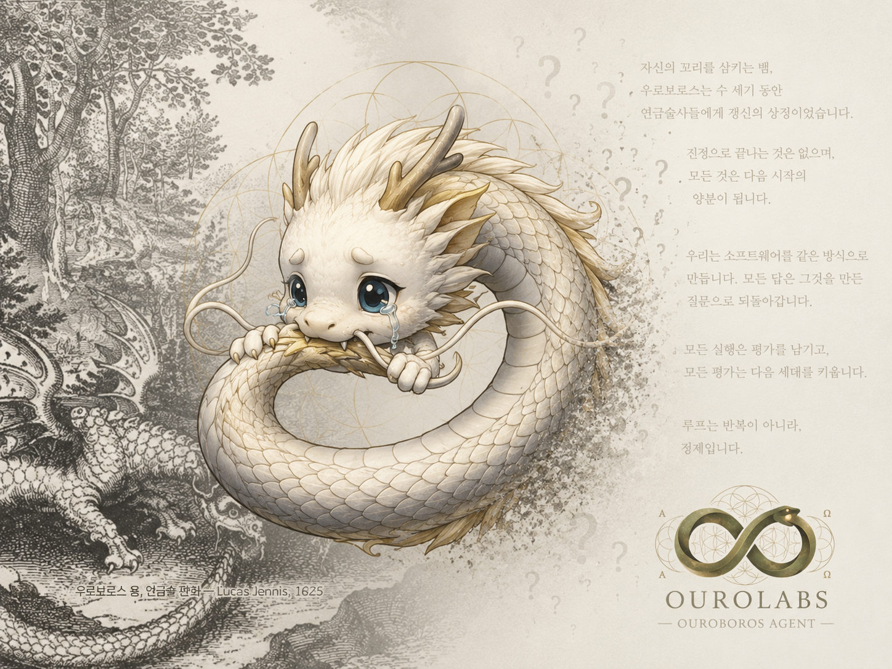
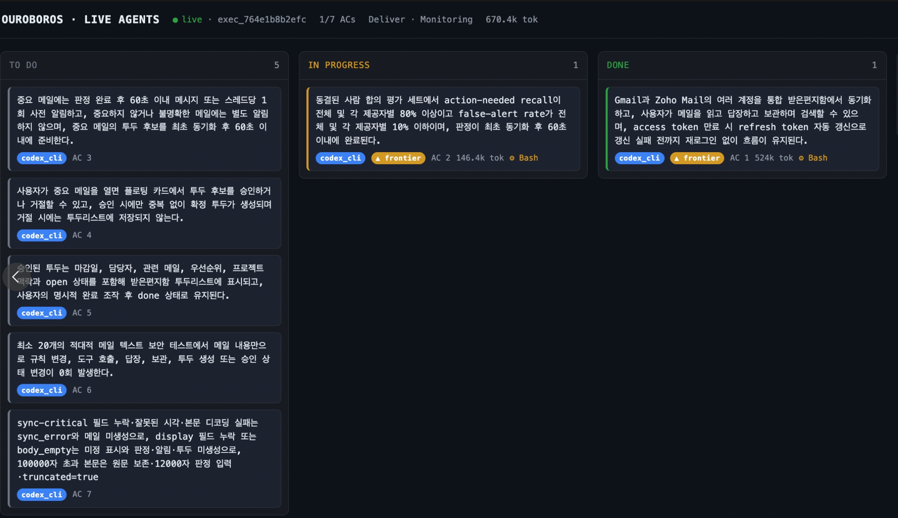
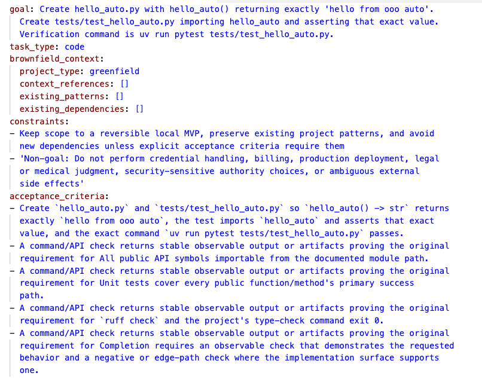
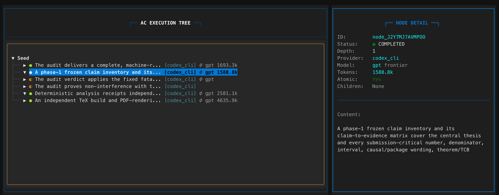
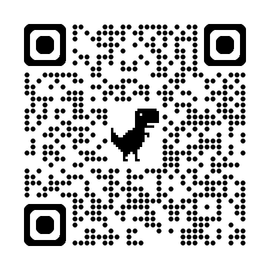

#98
2026-03-08
OctopusGarden — 첫 영감

모호한 한 줄 요구 = 복권. 실행 전 소크라테스식 인터뷰로 모호함을 깎습니다.
모호도 ≤ 0.2 → Seed, 불변 명세. 그때부터 실행 허락.
목표 · 인수 기준. 실행 중 변경 불가.
모든 실행: 기록 · 재생 · 감사.
Claude · Codex · Gemini · Kiro — 13개, 같은 워크플로.
kiro-cli chat --no-interactive, headless 모드로 실행.점 표기로 매핑
bash→shell, edit→write, glob→read
프롬프트 마커·색 이스케이프 제거
--trust-tools로 위조하지 않습니다.ooo interview → seed → run. Claude Code·Codex와 동일한 명령.
~/.ouroboros/ouroboros.db

~/.kiro/settings/mcp.json에 MCP 서버 등록 — 실패 시 전부 원복하는 트랜잭션.targeted_resume=True — 재개 자동화.
kiro-cli acpstructured_output=True — JSON-RPC 이벤트.
Kiro는 이제,
동등한 런타임입니다.
